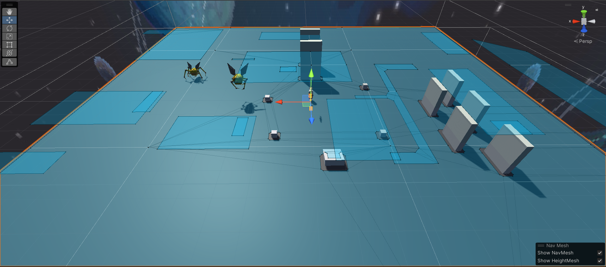
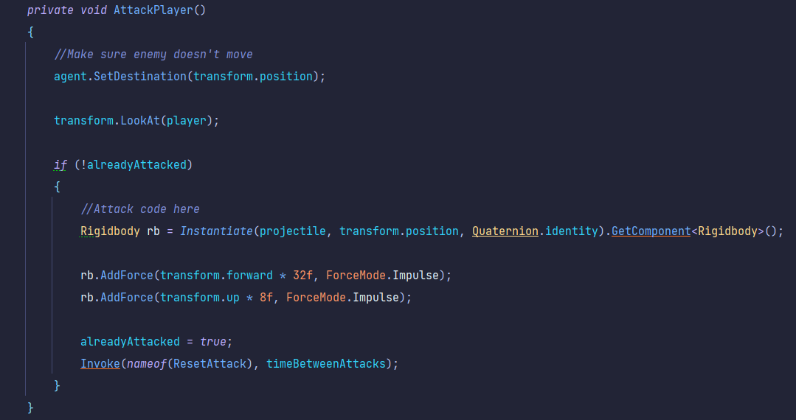

Expanding Space
Project Status: Finished
Project Type: Group
Project Duration: 8 weeks
Software Used: Unity
Languages Used: C#
Primary Role(s): Programmer, Git master
Team: 3 Devs, 4 Artists
About Expanding Space
"Expanding Space" was a collaborative project to develop an engaging game that would inspire space travel and astronomy interest amongst a younger audience. It marked the first partnership between Game Developers and Game Artists, with each group comprising two developers and four artists. But our group had an extra dev who joined the project at a later date. This was also the second time we worked with sprints if i recall correctly.
My Features
- Player Movement
- Enemy AI
- UI
- Skybox
Software Used
- Navmesh
- TextMesh Pro
- Trello
Intro
To start this project off, we as a team were
brainstorming about the genre of the game, the
gameplay loop, and a goal and such.
We decided to do go for a 3D horror game with
parkouring and FPS elements.
So the artists went ahead to create their assets
and sketches, while i started working on a First
Person Camera Controller as seen below.
Sprint 0: Initial research phase.
Sprint 1 and 2: Concentrated on creating a
playable game.
Sprint 3: Finish & Present the product on a
project market.
FPS Camera Script:
In the snippet above i expanded on a simple
script i've learned to make in the math
classes of my teacher Jelle.
Thanks to those lessons i already knew how
to implement mathematical features like
'Mathf.Clamp' for camera related scripts.
Development
After making an inverted Camera Controller script, i continued to think about what would be logical to implement next in our project, and concluded the player doesn't only need to look around but also be able to move around.
Player Mobility

Here you can see the player jumping from
wall to wall.
I've also added the possibility to run and
slide in case the player engages combat.
My Test Scene:

Here i created a scene to propperly test out
simple things such as ground checks
Gravity, Slopes, Wall jumps, parkouring
options and more.
My Test Scene:

Here i created a scene to propperly test out
simple things such as ground checks
Gravity, Slopes, Wall jumps, parkouring
options and more.
The navmesh was tough to figure out, and in the end i didn't completely get it working with the enemies not moving from their position. Atleast i managed to figure out how the following Attack Function
My Test Scene:

The Enemy checks every frame wether the
player is in Sight- or Attack range.
So as soon the player gets within sight
range, the enemy starts looking at you.
And when you enter the Attack Range the
enemy shoots a bullet at you every 3
seconds.
Conclusion
By the end of this project, i've improved my developing skills alot during the development process of this game. I learned how to work together with artists more through communicating with them about Anchor Points in their models for example. And i had to learn each of them how Github worked and i myself learned how branches worked mid-process. Because of our little knowledge there were some bugs and errors in the Repositories so i had to make 2 new ones in total. also making use of Git LFS for the first time, since the map file was above 100Mb.
Gameplay:

Here the player has just picked up a gun.
The player loses HP by the enemy's attacks
and regens.
In the end the player dies eitherway and
respawns.